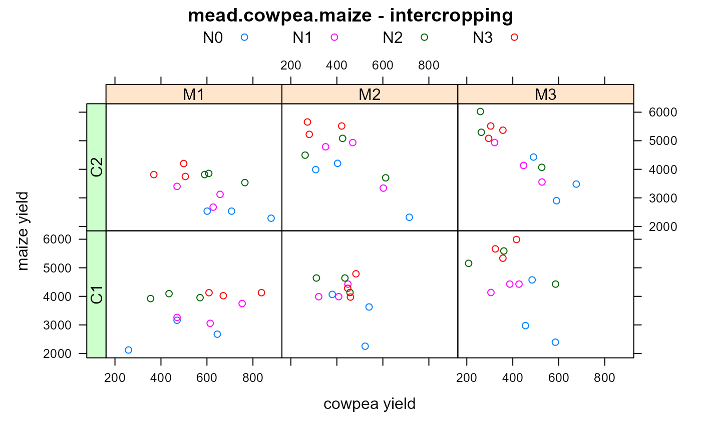

mead.cowpea.maize.RdIntercropping experiment of maize/cowpea, multiple nitrogen treatments.
A data frame with 72 observations on the following 6 variables.
blockblock, 3 levels
nitronitrogen, 4 levels
cowpeacowpea variety, 2 levels
maizemaize variety, 3 levels
cyieldcowpea yield, kg/ha
myieldmaize yield, kg/ha
An intercropping experiment conducted in Nigeria. The four nitrogen treatments were 0, 40, 80, 120 kg/ha.
Roger Mead. 1990. A Review of Methodology For The Analysis of Intercropping Experiments. Training Working Document No. 6. CIMMYT. https://repository.cimmyt.org/xmlui/handle/10883/868
Roger Mead, Robert N Curnow, Anne M Hasted. 2002. Statistical Methods in Agriculture and Experimental Biology, 3rd ed. Chapman and Hall. Page 390.
# \dontrun{
library(agridat)
data(mead.cowpea.maize)
dat <- mead.cowpea.maize
# Cowpea and maize yields are clearly in competition
libs("latticeExtra")
#>
#> Attaching package: 'latticeExtra'
#> The following object is masked from 'package:corrgram':
#>
#> panel.ellipse
useOuterStrips(xyplot(myield ~ cyield|maize*cowpea, dat, group=nitro,
main="mead.cowpea.maize - intercropping",
xlab="cowpea yield",
ylab="maize yield", auto.key=list(columns=4)))

# Mead Table 2 Cowpea yield anova...strongly affected by maize variety.
anova(aov(cyield ~ block + maize + cowpea + nitro +
maize:cowpea + maize:nitro + cowpea:nitro +
maize:cowpea:nitro, dat))
#> Analysis of Variance Table
#>
#> Response: cyield
#> Df Sum Sq Mean Sq F value Pr(>F)
#> block 2 73014 36507 2.8019 0.071083 .
#> maize 2 409446 204723 15.7122 6.298e-06 ***
#> cowpea 1 6013 6013 0.4615 0.500319
#> nitro 3 113064 37688 2.8925 0.045320 *
#> maize:cowpea 2 9910 4955 0.3803 0.685790
#> maize:nitro 6 67563 11261 0.8642 0.528246
#> cowpea:nitro 3 172403 57468 4.4106 0.008282 **
#> maize:cowpea:nitro 6 135379 22563 1.7317 0.135003
#> Residuals 46 599359 13030
#> ---
#> Signif. codes: 0 '***' 0.001 '**' 0.01 '*' 0.05 '.' 0.1 ' ' 1
# Cowpea mean yields for nitro*cowpea
aggregate(cyield ~ nitro+cowpea, dat, FUN=mean)
#> nitro cowpea cyield
#> 1 N0 C1 482.3333
#> 2 N1 C1 459.2222
#> 3 N2 C1 413.1111
#> 4 N3 C1 511.4444
#> 5 N0 C2 596.5556
#> 6 N1 C2 496.7778
#> 7 N2 C2 478.8889
#> 8 N3 C2 367.0000
# Cowpea mean yields for each maize variety
aggregate(cyield ~ maize, dat, FUN=mean)
#> maize cyield
#> 1 M1 581.9167
#> 2 M2 430.5000
#> 3 M3 414.5833
# Bivariate analysis
aov.c <- anova(aov(cyield/1000 ~ block + maize + cowpea + nitro +
maize:cowpea + maize:nitro + cowpea:nitro +
maize:cowpea:nitro, dat))
aov.m <- anova(aov(myield/1000 ~ block + maize + cowpea + nitro +
maize:cowpea + maize:nitro + cowpea:nitro +
maize:cowpea:nitro, dat))
aov.cm <- anova(aov(cyield/1000 + myield/1000 ~ block + maize + cowpea + nitro +
maize:cowpea + maize:nitro + cowpea:nitro +
maize:cowpea:nitro, dat))
biv <- cbind(aov.m[,1:2], aov.c[,2], aov.cm[,2])
names(biv) <- c('df','maize ss','cowpea ss','ss for sum')
biv$'sum of prod' <- (biv[,4] - biv[,2] - biv[,3] ) /2
biv$cor <- biv[,5]/(sqrt(biv[,2] * biv[,3]))
signif(biv,2)
#> df maize ss cowpea ss ss for sum sum of prod cor
#> block 2 0.290 0.0730 0.250 -0.058 -0.400
#> maize 2 18.000 0.4100 13.000 -2.600 -0.980
#> cowpea 1 0.027 0.0060 0.058 0.013 1.000
#> nitro 3 29.000 0.1100 25.000 -1.800 -0.980
#> maize:cowpea 2 1.100 0.0099 0.920 -0.099 -0.950
#> maize:nitro 6 1.300 0.0680 0.920 -0.200 -0.680
#> cowpea:nitro 3 0.240 0.1700 0.150 -0.130 -0.640
#> maize:cowpea:nitro 6 1.300 0.1400 1.300 -0.033 -0.079
#> Residuals 46 16.000 0.6000 14.000 -1.400 -0.460
## df maize ss cowpea ss ss for sum sum of prod cor
## block 2 0.290 0.0730 0.250 -0.058 -0.400
## maize 2 18.000 0.4100 13.000 -2.600 -0.980
## cowpea 1 0.027 0.0060 0.058 0.013 1.000
## nitro 3 29.000 0.1100 25.000 -1.800 -0.980
## maize:cowpea 2 1.100 0.0099 0.920 -0.099 -0.950
## maize:nitro 6 1.300 0.0680 0.920 -0.200 -0.680
## cowpea:nitro 3 0.240 0.1700 0.150 -0.130 -0.640
## maize:cowpea:nitro 6 1.300 0.1400 1.300 -0.033 -0.079
## Residuals 46 16.000 0.6000 14.000 -1.400 -0.460
# }